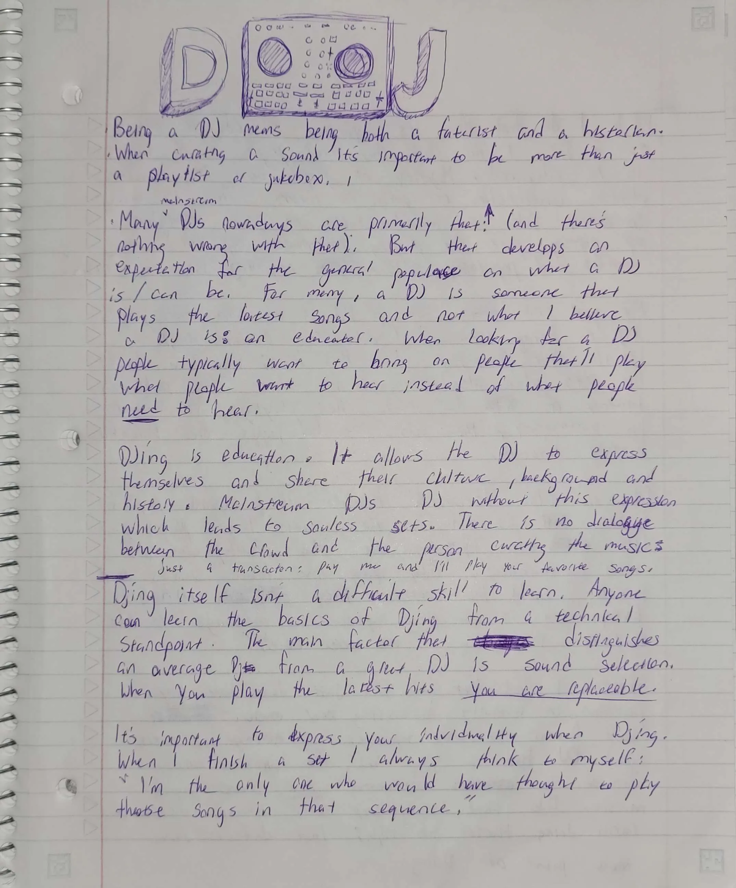
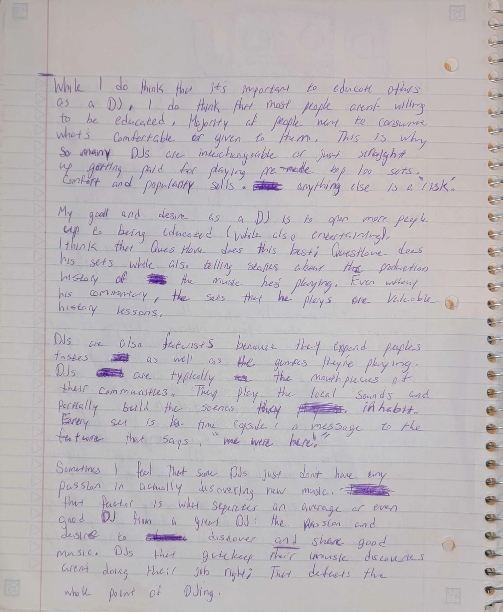

To me, being a DJ means being both a futurist and a historian.
When curating a sound, it’s important to be more than just a playlist or a jukebox. Many mainstream DJs nowadays are primarily that: (a playlist or a jukebox). There’s nothing necessarily wrong with that, but that develops an expectation for the general populace on what a DJ is/can be. For many, a DJ is someone that plays the latest hits; and not what I believe a DJ is: an educator. When looking for a DJ, promoters typically want to bring on people that’ll play what people want to hear instead of what people need to hear.
DJing is education. It allows the DJ to express themselves and share their culture, background and history. Mainstream DJ’s often DJ without this self-expression which leads to soulless sets. There is no dialogue between the crowd and the person curating the music: It’s just a transaction “Pay me and I’ll play your favorite songs!”.
DJing itself isn’t a difficult skill to learn. Anyone can learn the basics of DJing from a technical standpoint. The main factor that distinguishes an average DJ from a great DJ is sound selection.
When you only play the latest hits you are replaceable.
It’s important to express your individuality to be a great DJ. I find the most enjoyment in a set when I can understand who the DJ is through their music. When I finish a set, I always think to myself: “I’m the only person who would’ve thought to play these songs in that sequence.”
While I do think that it’s important to educate others as a DJ, I do think that most people aren’t willing to be educated. Majority of people want to consume what’s comfortable or given to them through an algorithm. This is why so many mainstream DJs are interchangeable (if they’re not producers) or just straight up getting paid for playing pre-made sets with nothing but top 100 songs. Comfort and popularity sells and anything else is a risk in many promoters eyes.
My goal and desire as a DJ is to open more people up to being educated (while also being entertaining). I think that Questlove does this approach the best. Questlove does his sets while also telling stories about the production history of the music he’s playing. Even without his commentary, his sets alone are valuable history lessons.
DJs are also futurists because they expand people’s tastes as well as the reach of the genres they’re playing. DJs are typically the mouthpieces and promoters of their communities. They play the local sounds and partially build the scenes they inhabit. Every set is a time capsule with a message to the future that says, “we were here!”
Sometimes I feel that some DJs just don’t have any passion for actually discovering new music. This is the key factor that separates an average or even good DJ from a great DJ: the passion and desire to discover and share great music (DJs that gatekeep their music discoveries aren’t doing their job right. That defeats the whole purpose of DJing).

